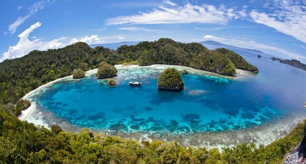
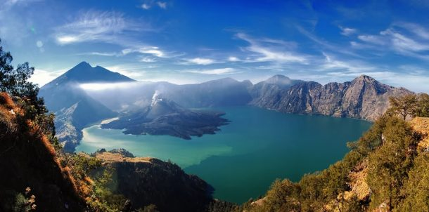
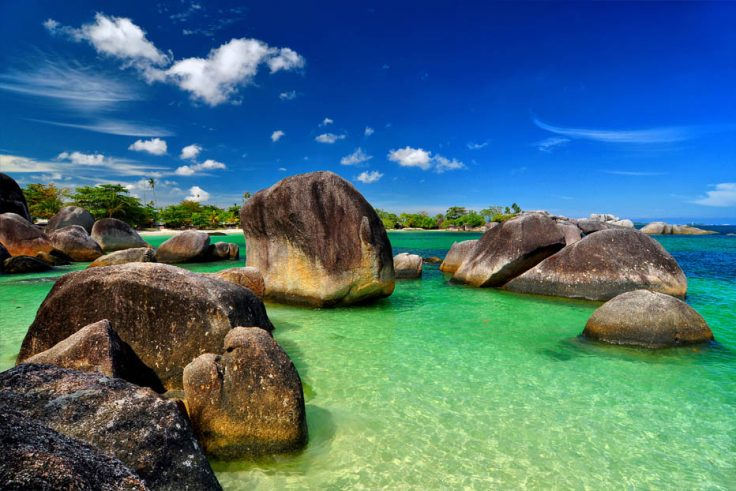

| Gambar | Nama | Lokasi | Deskripsi |
|---|---|---|---|
|  | Kepulauan Raja Ampat | Papua Barat Daya | Raja Ampat sendiri merupakan nama yang diberikan bagi keempat pulau indah yang berasal dari mitos lokal, yaitu Waigeo, Salawati, Batanta, dan Misool. Wisatawan dari berbagai penjuru dunia mati- matian ingin datang ke pulau ini untuk menikmati 540 jenis karang, 1.511 spesies ikan, serta 700 jenis moluska. |
|  | Gunung Rinjani | Lombok, Nusa Tenggara Barat | Gunung Rinjani, banyak orang menyebut gunung ini sebagai salah satu gunung tercantik di Indonesia. Dengan tinggi 3.726 mdpl, Gunung Rinjani adalah gunung berapi tertinggi kedua di Indonesia. Bagi orang Bali sendiri, gunung ini termasuk dalam jajaran tiga gunung yang disucikan setelah Gunung Semeru dan Gunung Agung. |
|  | Kepulauan Belitung | Kepulauan Bangka Belitung | Pulau yang naik daun setelah film Laskar Pelangi ini memang memiliki keindahan pantai yang sempurna. Pantai-pantai di Kepulauan Belitung memiliki pemandangan yang berbeda dari pantai-pantai di Indonesia lainnya. |